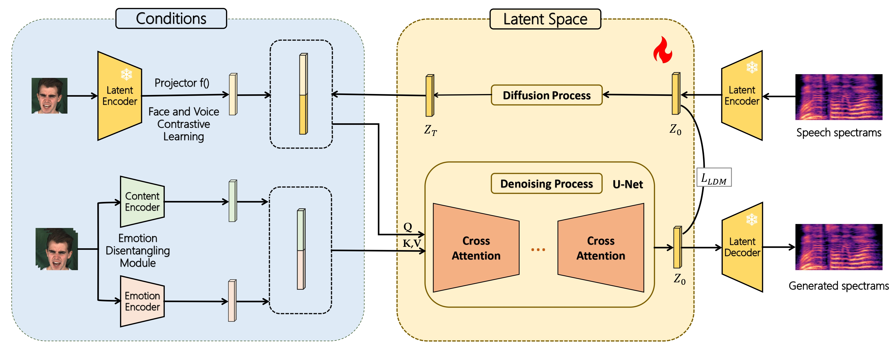

Video-to-Speech (V2S) Synthesis aims to generate speech that synchronizes with lip motions and reflects the speaker's unique characteristics. However, existing methods tend to overlook the speaker's emotional state, which is crucial for producing expressive speech, and they often struggle to retain speaker's characteristics for unseen individuals, reducing the model's generalization capability. To address these issues, we propose \modelname: a latent diffusion model (LDM) for zero-shot \textbf{Exp}ressive \textbf{V}ideo\textbf{2S}peech synthesis. In general, we reformulate video-to-speech synthesis as a denoising process in a latent space, guided jointly by lip movements and facial features. More specifically, we introduce an emotion disentangling module to decompose the lip motions into seperate emotion and context embeddings by generating cross-reconstructed emotional speech. Then, a face-speech contrastive learning mechanism (FSCL) is proposed to capture the correspondence between visual and acoustic speaker characteristics, enabling accurate voice synthesis from a single face image. As a result, the proposed \modelname is capable of generating expressive speech that is both intelligible and emotionally consistent, and more importantly, it generalizes across different speakers. Extensive experiments demonstrate that our approach outperforms state-of-the-art methods in both quantitative metrics and human evaluations, effectively synthesizing expressive speech, especially for generalized zero-shot individuals.
LRS2 Dataset
| Ground-Truth | ExpV2S (Ours) | LipVoicer | Lip2Speech |
|---|---|---|---|
LRS3 Dataset
| Ground-Truth | ExpV2S (Ours) | LipVoicer | Lip2Speech |
|---|---|---|---|
MEAD Dataset
| Ground-Truth | ExpV2S (Ours) | TTS | EmotiVoice | VoiceClone |
|---|---|---|---|---|